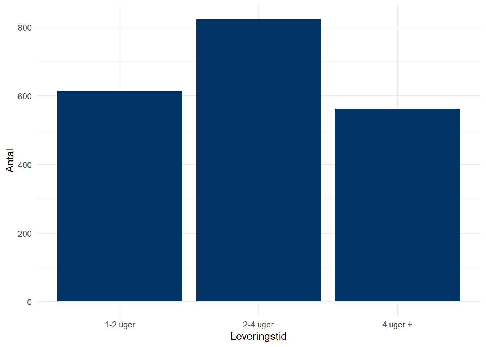

df <- readRDS("online_shopping.rds")Aflevering 6: forslag til besvarelse
Følgende er et forslag til besvarelse af den femte ud af de seks obligatoriske afleveringer i faget. Brug det til at sammenligne med dine egne svar og diskutér med dine medstuderende.
Introduktion
I denne opgave skal I analysere online forbrugeradfærd med udgangspunkt i et nyt datasæt. I skal analysere, hvor mange penge folk bruger på at handle på nettet, og hvilke baggrundskarakteristika der siger noget om, hvor stort et forbrug de har.
Data
Download datasættet online_shopping.rds fra lectio og gem det på din computer i samme mappe som den r-fil, som du bruger til at besvare spørgsmålene. Datasættet er simuleret og indeholder data på 2000 respondenters onlineforbrug og baggrundsinformation. Datasættet indeholder følgende variable:
| Variabel | Måler |
|---|---|
| forbrug | Forbrug i DKK på online indkøb (afhængig variabel) |
| alder | Respondentens alder (i år) |
| køn | Køn (mand eller kvinde) |
| indkomst | Respondentens indkomstniveau (i DKK) |
| leveringstid | Gennemsnitlig leveringstid på forbrugerens adresse (1-2 uger, 2-4 uger, 4+ uger) |
| levering_1_2_uger | Dummy-variabel for leveringstid 1-2 uger (1 = ja, 0 = nej) |
| levering_2_4_uger | Dummy-variabel for leveringstid 2-4 uger (1 = ja, 0 = nej) |
| levering_4_uger_plus | Dummy-variabel for leveringstid 4+ uger (1 = ja, 0 = nej) |
Indlæs datasættet til et objekt kalder ”df” med følgende kode:
1 Variable og måleniveauer
Følgende opgave er teoretisk, dvs. du skal ikke bruge datasættet til at besvare spørgsmålet.
Definér måleniveauet for følgende variable:
A. Årlige forbrug i DKK på online indkøb.
Årligt forbrug i DKK er intervalskaleret, da det giver mening at rangordne variablens værdier og afstandenn mellem værdierne er konstant og meningsfuld.
B. Leveringstid (1-2, 2-4 eller 4+ uger).
Leveringstid målt i kategorier er ordinal skaleret, da det giver mening at rangordne variablens værdier, men afstanden mellem værdierne er ikke konstant og dermed meningsfuld.
C. Respondentens alder
Alder i år er intervalskaleret, da det giver mening at rangordne variablens værdier, og afstandenn mellem værdierne er konstant og meningsfuld.
D. En (tænkt) variabel der angiver, om en respondent har brugt mere end 5000 DKK på online indkøb.
Denne variabel kan beskrives som dikotom/binær, da den kun har to kategorier (brugt mere end 5000 DKK på online indkøb eller ej). Derudover kan man argumentere for at behandle den som ordinal, da værdierne i princippet kan rangordnes.
2 Univariat analyse
I følgende opgaver skal du bruge datasættet til at beregne nogle af dine svar.
Variablen forbrug er intervalskaleret og måler respondenternes forbrug online det seneste år i DKK.
A. Beregn middelværdi og median for variablen forbrug. Sammenlign og kommentér på, hvad det siger om fordelingen.
library(DescTools)
Mean(df$forbrug, na.rm = T) [1] 1830.758Median(df$forbrug, na.rm = T) [1] 1550Medianen ligger ca. 300 DKK under middelværdien, hvilket tyder på, at der er nogle enkelte observationer med meget højt forbrug, der trækker gennemsnittet op.
B. Beregn standardafvigelsen for forbrug og forklar, hvad standardafvigelsen måler.
sd(df$forbrug, na.rm = TRUE)[1] 1341.862Standardafvigelsen på 1341.862 fortæller os, at observationerne i datasættet ligger spredt omkring middelværdien med en gennemsnitlig afstand på ca. 1342 DKK ift. forbrug.
C. Beregn et 95% konfidensinterval for middelværdien af forbrug og forklar fortolkningen.
t.test(df$forbrug)
One Sample t-test
data: df$forbrug
t = 61.015, df = 1999, p-value < 2.2e-16
alternative hypothesis: true mean is not equal to 0
95 percent confidence interval:
1771.914 1889.602
sample estimates:
mean of x
1830.758 Konfidensintervallet fortæller os, at vi på baggrund af stikprøven forventer (med 95 % sikkerhed), at den sande middelværdi i populationen for forbrug på online shopping ligger et sted mellem 1771.914-1889.602 DKK
D. Lav et univariat barplot for variablen leveringstid. Hvilken leveringstid er mest almindelig?
library(ggplot2)
ggplot(df) +
aes(x = factor(leveringstid)) +
geom_bar(fill = "#003366") +
labs(
x = "Leveringstid",
y = "Antal"
) +
theme_minimal()
Barplottet viser, at flest bor et sted med en gennemsnitlig leveringstid på 2-4 uger.
3 Bivariat analyse
I følgende opgaver skal du bruge datasættet til at beregne nogle af dine svar.
Du skal nu bruge en t-test til at teste, om der er forskel på, hvor mange penge mænd og kvinder gennemsnitligt handler for på nettet. Du skal bruge variablene forbrug og køn. Variablen forbrug er intervalskaleret og måler respondenternes forbrug online det seneste år i DKK. Variablen køn er en nominal/og eller dikotom variabel, der måler respondenternes køn som enten mand eller kvinde.
A. Opstil hypoteser for en bivariat t-test for forskellen i gennemsnitligt forbrug mellem mænd og kvinder
H0: der er ikke nogen signifikant forskel på det gennemsnitligt forbrug for mænd og kvinder
H1: der er en signifikant forskel på det gennemsnitligt forbrug for mænd og kvinder
B. Gennemfør og konkludér på t-testen. Er der en signifikant forskel på det gennemsnitlige forbrug for mænd og kvinder?
# Udfør t-test
ttest_resultat_bivariat <- t.test(forbrug ~ køn, data = df)
# Opret en tabel med resultaterne
(ttest_tabel_bivariat <- data.frame(
Parameter = c("Gennemsnit Gruppe 1", # Gennemsnit for første gruppe
"Gennemsnit Gruppe 2", # Gennemsnit for anden gruppe
"Test-statistik", # Teststatistikken (t-værdien)
"P-værdi", # P-værdien
"Nedre konfidensinterval", # Nedre konfidensinterval
"Øvre konfidensinterval", # Øvre konfidensinterval
"Frihedsgrader"), # Frihedsgrader (df)
Værdi = c(
round(ttest_resultat_bivariat$estimate[1], 2), # Gennemsnittet for første gruppe afrundet til 3 decimaler
round(ttest_resultat_bivariat$estimate[2], 2), # Gennemsnittet for anden gruppe afrundet til 3 decimaler
round(ttest_resultat_bivariat$statistic, 3), # Teststatistikken afrundet til 3 decimaler
sprintf("%.4f", ttest_resultat_bivariat$p.value), # P-værdien med 4 decimaler
round(ttest_resultat_bivariat$conf.int[1], 3), # Nedre konfidensinterval afrundet til 3 decimaler
round(ttest_resultat_bivariat$conf.int[2], 3), # Øvre konfidensinterval afrundet til 3 decimaler
round(ttest_resultat_bivariat$parameter, 1) # Frihedsgrader afrundet til 1 decimal
)
)) Parameter Værdi
1 Gennemsnit Gruppe 1 1814.87
2 Gennemsnit Gruppe 2 1846.83
3 Test-statistik -0.532
4 P-værdi 0.5944
5 Nedre konfidensinterval -149.67
6 Øvre konfidensinterval 85.75
7 Frihedsgrader 1997.8T-testen returnerer en p-værdi på 0.59. Vi kan altså ikke afvise nulhypotesen om, at der ikke er nogen signifikant forskel på det gennemsnitligt forbrug for mænd og kvinder med udgangspunkt i denne stikprøve.
Lineær regressionsanalyse
I følgende opgaver skal du bruge datasættet til at beregne dine svar.
I denne opgave skal du undersøge sammenhængen mellem forbrug og alder ved hjælp af forlæns modelsøgning. Du har en hypotese om, at yngre mennesker handler mere online end ældre. Altså forventer du en negativ korrelation mellem forbrug og alder. Du skal nu estimere denne sammenhæng og efterprøve, hvor stærk den er, når der tages højde for andre relevante faktorer, som spiller ind ift. online forbrug.
Simpel model
Du skal først estimere en simpel model med sammenhængen mellem forbrug og alder. Variablen forbrug er intervalskaleret og måler respondenternes forbrug online det seneste år i DKK. Variablen alder betragtes også som intervalskaleret og måler respondenternes alder i år.
A. Estimér følgende model 1: \(forbrug=\alpha+\beta_1*alder+\epsilon\)
model1 <- lm(forbrug ~ alder, data = df)
library(texreg)
(texreg::screenreg(list(model1), include.ci=F))
========================
Model 1
------------------------
(Intercept) 3520.70 ***
(77.38)
alder -37.02 ***
(1.59)
------------------------
R^2 0.21
Adj. R^2 0.21
Num. obs. 2000
========================
*** p < 0.001; ** p < 0.01; * p < 0.05B. Hvilken variabel er den afhængige, og hvilken er den uafhængige?
Forbrug er den afhængige variabel, alder er den uafhængige.
C. Hvad er fortolkningen af parameterestimatet for konstantleddet \(\alpha\) (intercept)?
Konstantleddet \(\alpha\) / intercept er den forventede værdi på den afhængige variabel forbrug, når alle uafhængige variable er lig 0. Parameterestimatet for \(\alpha\) beskriver her det forventede gennemsnitlige forbrug for en person på 0 år (3520.70 DKK).
D. Hvad er fortolkningen af parameterestimatet for \(\beta_1\) ? Kommenter på om sammenhængen er statistisk signifikant.
\(\beta_1\) beskriver ændringen i den afhængige variabel “forbrug” for én enhedsændring i den uafhængige variabel “alder”. Parameterestimatet for \(\beta_1\) beskriver altså det forventede fald (parameterestimatet er negativt) i forbrug, for hvert år man bliver ældre (hver stigning i alder på 1). De tre stjerner ud fra parameterestimatet for \(\beta_1\) indikerer, at p-værdien er under 0,001. Den er derfor under vores statistiske grænseværdi på 0,05, hvilket betyder, at der ser ud til at være en statistisk signifikant negativ sammenhæng mellem alder og forbrug. Hver gang alder stiger med én falder det forventede forbrug gennemsnitligt med 37 DKK.
E. Beregn den forventede forbrug for en person på 30 år.
Ligningen er givet ved: \(forbrug=\alpha+\beta_1*alder+\epsilon\)
3520.7-(37.02*30)[1] 2410.1Multipel model: Indkomst som kontrolvariabel
Sammenhængen mellem forbrug og alder kan tænkes at være påvirket af andre bagvedliggende faktorer, der korrelerer med begge variable. Det kunne for eksempel tænkes, at indkomst er en “confounding variable” i denne sammenhæng. Du skal derfor indføre indkomst som kontrolvariabel i modellen. Læg mærke til at variablen indkomst måler indkomst i 1000 DKK.
F. Estimér følgende model 2: \(forbrug=\alpha+\beta_1*alder+\beta_2*indkomst+\epsilon\)
model2 <- lm(forbrug ~ alder+indkomst, data = df)
library(texreg)
(texreg::screenreg(list(model1, model2), include.ci=F))
=====================================
Model 1 Model 2
-------------------------------------
(Intercept) 3520.70 *** 3302.44 ***
(77.38) (119.30)
alder -37.02 *** -37.08 ***
(1.59) (1.59)
indkomst 5.28 *
(2.20)
-------------------------------------
R^2 0.21 0.22
Adj. R^2 0.21 0.21
Num. obs. 2000 2000
=====================================
*** p < 0.001; ** p < 0.01; * p < 0.05G. Hvad er fortolkningen af parameterestimatet for konstantleddet \(\alpha\) (Intercept) nu?
Konstantleddet \(\alpha\) / intercept er stadig den forventede værdi på den afhængige variabel forbrug, når alle uafhængige variable er lig 0. Parameterestimatet for \(\alpha\) beskriver her det forventede gennemsnitlige forbrug for en person på 0 år med en indkomst på 0 (3302.44 DKK).
H. Kommentér igen på fortolkningen af parameterestimatet for \(\beta_1\). Er der en statistisk signifikant
sammenhæng mellem forbrug og alder, når der kontrolleres for indkomst?
\(\beta_1\) beskriver nu ændringen i den afhængige variabel “forbrug” for én enhedsændring i den uafhængige variabel “alder”, når der kontrolleres for indkomst. Parameterestimatet for \(\beta_1\) beskriver altså det forventede fald (parameterestimatet er negativt) i forbrug, for hvert år man bliver ældre (hver stigning i alder på 1), når indkomst holdes konstant. De tre stjerner ud fra parameterestimatet for \(\beta_1\) indikerer, at p-værdien er under 0,001. Den er derfor under vores statistiske grænseværdi på 0,05, hvilket betyder, at der ser ud til stadig at være en statistisk signifikant negativ sammenhæng mellem alder og forbrug, også når der kontrolleres for indkomst. Hver gang alder stiger med en falder det forventede forbrug gennemsnitligt med 37.08 DKK.
I. Hvad er fortolkningen af parameterestimatet for \(\beta_2\)? Kommenter på om sammenhængen er statistisk signifikant.
\(\beta_2\) beskriverændringen i den afhængige variabel “forbrug” for én enhedsændring i den uafhængige variabel “indkomst”, når der kontrolleres for alder. Parameterestimatet for \(\beta_2\) beskriver altså den forventede stigning i forbrug, for hver 1000 DKK man tjener ekstra (hver stigning i indkomst på 1), når alder holdes konstant. Den ene stjerne ud fra parameterestimatet for \(\beta_2\) indikerer, at p-værdien er under 0,05. Den er derfor under vores statistiske grænseværdi, hvilket betyder, at der ser ud til at være en statistisk signifikant sammenhæng mellem indkomst og forbrug, også når der kontrolleres for alder. Hver gang indkomst stiger med én (1000 DKK) falder det forventede forbrug gennemsnitligt med 5.28 DKK.
J. Beregn det forventede forbrug for en person på 30 år med en månedlig indkomst på 30.000 DKK.
\(forbrug=\alpha+\beta_1*alder+\beta_2*indkomst+\epsilon\)
\(forbrug=3302.44-37,08*30+5,28*30\)
3302.44-(37.08*30)+(5.28*30)[1] 2348.44Multipel model: Indkomst og leveringstid
Leveringstiden på varer, der hvor man bor, kan også tænkes at påvirke ens forbrug online. Du skal derfor også indføre leveringstid som kontrolvariabel i regressionsmodellen. Variablen leveringstid har tre kategorier: 1-2 uger, 2-4 uger og 4+ uger. Disse tre kategorier er allerede blevet omkodet til tre dummyvariable i datasættet.
I den nedenstående model skal du udelade dummy-variablen levering_1_2_uger som referencekategori.
K. Estimér følgende model 3: \(forbrug=\alpha+\beta_1*alder+\beta_2*indkomst+\beta_3*levering\_2\_4\_uger+\beta_4*levering\_4\_uger\_plus+\epsilon\)
model3 <- lm(forbrug ~ alder+indkomst+
levering_2_4_uger+
levering_4_uger_plus, data = df)
library(texreg)
(texreg::screenreg(list(model1, model2, model3), include.ci=F))
===========================================================
Model 1 Model 2 Model 3
-----------------------------------------------------------
(Intercept) 3520.70 *** 3302.44 *** 3463.79 ***
(77.38) (119.30) (123.16)
alder -37.02 *** -37.08 *** -36.97 ***
(1.59) (1.59) (1.57)
indkomst 5.28 * 5.31 *
(2.20) (2.17)
levering_2_4_uger -64.94
(62.43)
levering_4_uger_plus -501.48 ***
(68.34)
-----------------------------------------------------------
R^2 0.21 0.22 0.24
Adj. R^2 0.21 0.21 0.24
Num. obs. 2000 2000 2000
===========================================================
*** p < 0.001; ** p < 0.01; * p < 0.05L. Kommentér igen på fortolkningen af parameterestimatet for \(\beta_1\). Er der en statistisk signifikant sammenhæng mellem forbrug og alder, når der kontrolleres for indkomst og leveringstid?
\(\beta_1\) beskriver nu ændringen i den afhængige variabel “forbrug” for én enhedsændring i den uafhængige variabel “alder”, når der kontrolleres for indkomst og leveringstid. Parameterestimatet for \(\beta_1\) beskriver altså det forventede fald (parameterestimatet er negativt) i forbrug, for hvert år man bliver ældre (hver stigning i alder på 1), når indkomst og leveringstid holdes konstant. De tre stjerner ud fra parameterestimatet for \(\beta_1\) indikerer, at p-værdien er under 0,001. Den er derfor under vores statistiske grænseværdi på 0,05, hvilket betyder, at der ser ud til stadig at være en statistisk signifikant negativ sammenhæng mellem alder og forbrug, også når der kontrolleres for indkomst og leveringstid. Hver gang alder stiger med en falder det forventede forbrug gennemsnitligt med 37 DKK.
M. Kommentér på fortolkningen af parameterestimaterne for \(\beta_3\) og \(\beta_4\). Er der en statistisk signifikant forskel på forbruget mellem dem der har hhv. 2-4 ugers og 1-2 ugers leveringstid, og dem der har 4+ uger og 1-2 ugers leveringstid, når der kontrolleres for alder og indkomst?
\(\beta_3\) er den gennemsnitlige forskel i forbrug mellem dem, der har 2-4 ugers leveringstid og referencekategorien 1-2 ugers leveringstid, når der kontrolleres for alder og indkomst. Parameterestimatet er insignifikant (ingen stjerner), altså er der gennemsnitligt set ikke nogen signifikant forskel på forbruget hos dem, der har 1-2 ugers leveringstid og dem, der har 2-4 ugers leveringstid.
\(\beta_4\) er den gennemsnitlige forskel i forbrug mellem dem, der har 4+ ugers leveringstid og referencekategorien 1-2 ugers leveringstid, når der kontrolleres for alder og indkomst. De tre stjerner ud for parameterestimatet indikerer, at der er en signifikant forskel på det gennemsnitlige forbrug hos dem, der har 1-2 ugers leveringstid og dem, der har 4+ ugers leveringstid. Dem med 4+ ugers leveringstid forbruger gennemsnitligt for ca. 500 DKK mindre online årligt.
5 Forklaringskraft og modelvalg
I følgende opgaver skal du bruge datasættet til at beregne nogle af dine svar.
A. Sammenlign \(R^2\) værdien for model 1, 2 og 3. Kommentér på, hvilken model der har den højeste forklaringskraft, og hvad dette betyder.
Forklaringskraften i model 3 er højest, da model 3 forklarer 24 % af variationen i den afhængige variabel forbrug.
(texreg::screenreg(list(model1, model2, model3), include.ci=F))
===========================================================
Model 1 Model 2 Model 3
-----------------------------------------------------------
(Intercept) 3520.70 *** 3302.44 *** 3463.79 ***
(77.38) (119.30) (123.16)
alder -37.02 *** -37.08 *** -36.97 ***
(1.59) (1.59) (1.57)
indkomst 5.28 * 5.31 *
(2.20) (2.17)
levering_2_4_uger -64.94
(62.43)
levering_4_uger_plus -501.48 ***
(68.34)
-----------------------------------------------------------
R^2 0.21 0.22 0.24
Adj. R^2 0.21 0.21 0.24
Num. obs. 2000 2000 2000
===========================================================
*** p < 0.001; ** p < 0.01; * p < 0.05For at afgøre om forklaringskraften i model 3 er signifikant højere end i model 2 er det nødvendigt med en F-test mellem de to modeller.
B.Opstil hypoteser for en F-test mellem to modeller
H0: model 3 forklarer ikke singifikant mere end model 2
H1: model 3 forklarer signifikant mere end model 2
C. Gennemfør og konkludér på testen. Er forklaringskraften i model 3 signifikant højere end i model 2?
f_test <- anova(model2, model3)
(f_test_summary <- data.frame(
"Forskel i Frihedsgrader" = f_test$Df[2], # Forskel i frihedsgrader
"F-statistik" = f_test$F[2], # F-statistik
"P-værdi" = sprintf("%.4f", f_test$`Pr(>F)`[2]), # P-værdi med 4 decimaler
check.names = FALSE)) Forskel i Frihedsgrader F-statistik P-værdi
1 2 32.30198 0.0000F-testen returnerer en p-værdi på mindre end 0,0000, hvilket er under vores grænseværdi på 0,05. Vi kan altså forkaste nulhypotesen og konkludere, at model 3 har en signifikant højere forklaringskraft end model 2.